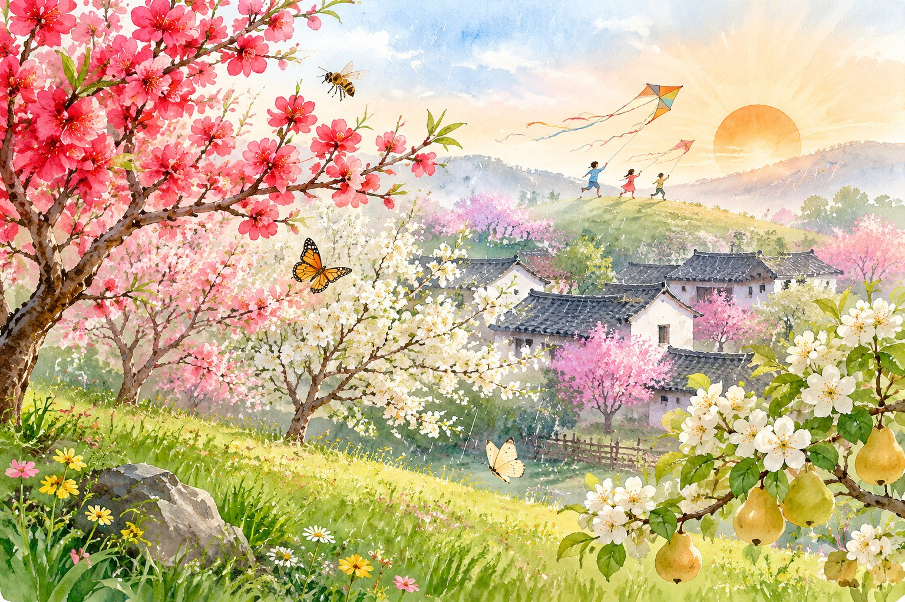
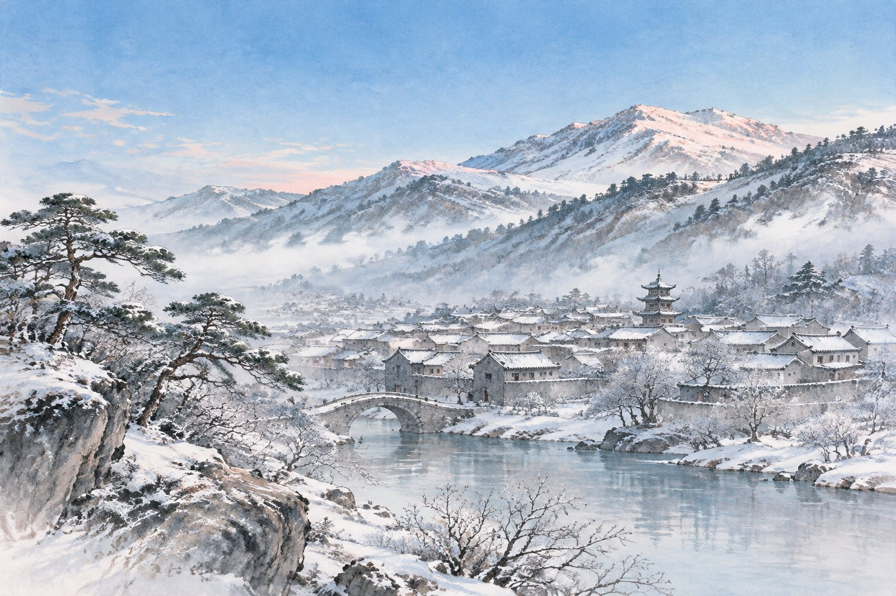
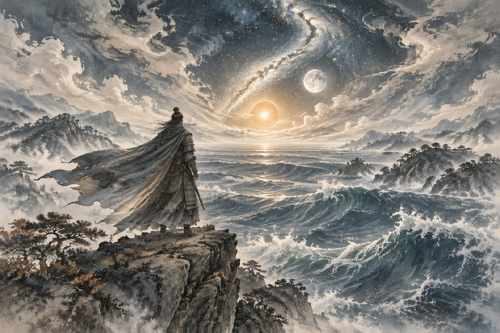
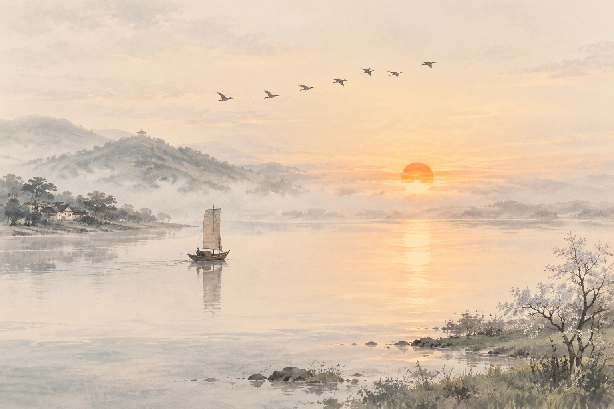
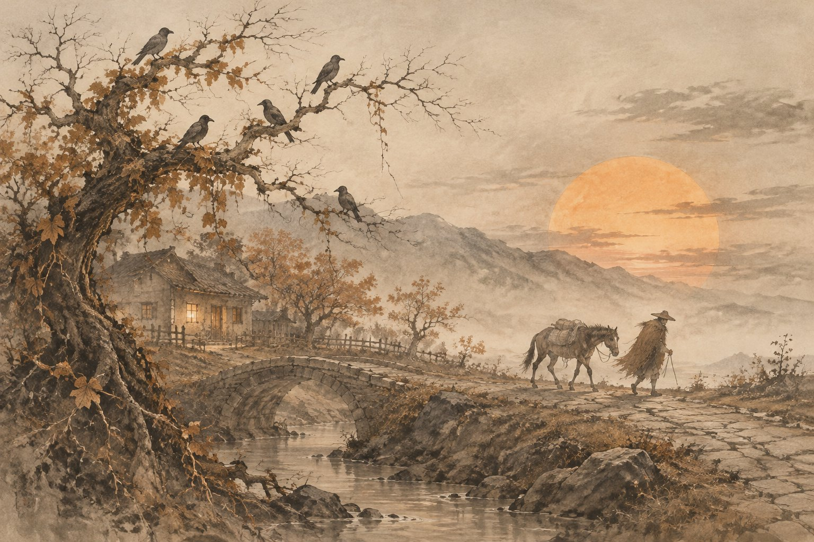
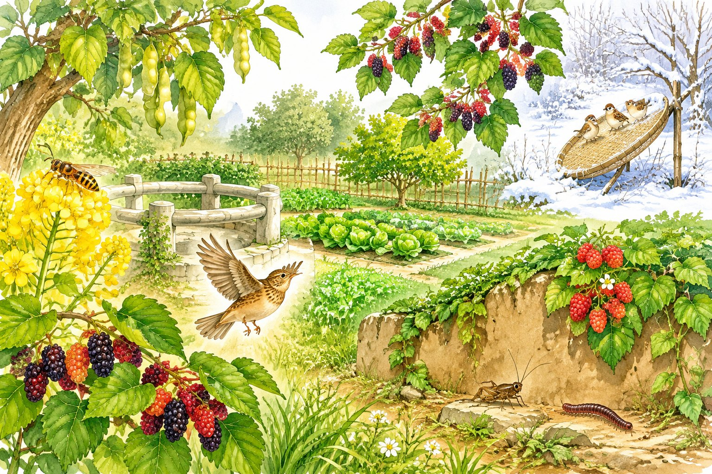

七年级上册 · 语文期中复习 Atlas
Michelle 专属 ｜ 2026 年 11 月 ｜ 覆盖第一～三单元 + 名著《朝花夕拾》｜ 含四诗对比专题 · 模拟练习卷 · 7 天冲刺计划
🧭 怎么用这份 Atlas（先读这里）
📌 说明：本 Atlas 依据统编版（2024）七年级上册教材整理，并覆盖老师圈画的重点篇目；如学校进度或老师补充与本文有出入，一律以老师课上讲的为准。古诗四首的「对比」是老师特别提示的考点，已单独做成一个专题（见目录 ★）。
🗺 知识总览地图 上半学期考点一张图
《济南的冬天》★★
《雨的四季》（自读）
古代诗歌四首★★★
借景抒情比喻拟人排比多感官写景
《散步》★★
《散文诗二首》（自读）
《世说新语》二则
细节描写以小见大文言启蒙
《往事依依》《再塑生命的人》（自读）
《论语》十二章★★★
名著《朝花夕拾》★★★
对比结构动词准确名著常识
⭐ 重点星级（按老师提示 + 考频）
| 篇目 | 星级 | 最可能考什么 |
|---|---|---|
| 古代诗歌四首 | ★★★ | 默写 + 四诗对比（意象·情感·手法） |
| 《论语》十二章 | ★★★ | 默写、字词、道理、成语 |
| 《从百草园到三味书屋》 | ★★★ | 捕鸟动词、写景句赏析、两处对比 |
| 《朝花夕拾》 | ★★★ | 篇目·人物·内容常识（选择+简答） |
| 《春》 | ★★ | 五幅图、修辞赏析、盼春赞首尾 |
| 《济南的冬天》 | ★★ | 对比开头、雪景段赏析、"温晴"文眼 |
| 《秋天的怀念》 | ★★ | 细节描写、"好好儿活"、标题含义 |
| 《散步》 | ★★ | 结尾含义、以小见大、景物描写作用 |
| 《世说新语》二则 | ★★ | 文言字词、翻译、"信""礼"理解 |
📊 半学期能力清单（自查打勾）
| 能力点 | 自查 |
|---|---|
| 四首古诗原文 + 理解性默写全对 | ☐ |
| 能背出四诗的作者、朝代、体裁 | ☐ |
| 能说清《春》"五幅图"顺序和结尾三个比喻 | ☐ |
| 能找出《济南的冬天》三组对比并说明作用 | ☐ |
| 《秋天的怀念》三次"看花"线索能复述 | ☐ |
| 《散步》结尾"整个世界"含义会写 | ☐ |
| 《论语》十二章默写 + 至少 6 个成语 | ☐ |
| 《朝花夕拾》10 篇篇名与对应人物能连线 | ☐ |
| 会套"赏析三步法"写句子赏析 | ☐ |
| 字音字形易错清单过 3 遍 | ☐ |
① 《春》 朱自清 精读 ★★
👤 作者名片
朱自清（1898—1948），字佩弦，江苏扬州人。散文家、诗人、学者（著名的民主战士，毛泽东赞其"表现了我们民族的英雄气概"）。代表作：散文《背影》《荷塘月色》《匆匆》，诗文集《踪迹》等。
🧠 结构图：盼春 → 绘春 → 赞春
嫩嫩的、绿绿的
拟人·叠词突出小草顽强的生命力和"嫩、绿、多"
花下蜜蜂闹、蝴蝶飞
比喻·排比·虚实结合花开多艳；"闭了眼，树上仿佛已满是桃儿杏儿梨儿"是虚写（想象）
引用·比喻·拟人·多感官触觉（抚摸）＋嗅觉（泥土味、花香）＋视觉（繁花嫩叶）＋听觉（鸟鸣、笛声）
密密地斜织着，一层薄烟
比喻·排比雨细、密、亮、斜；雨中静谧的傍晚与黄晕的光
"一年之计在于春"（引用）
由景及人，颂扬奋发向上，五幅图中最能体现"人勤春早"
✍ 修辞盘点
| 修辞 | 例句 | 表达效果 |
|---|---|---|
| 比喻＋排比 | 红的像火，粉的像霞，白的像雪 | 写出花色艳丽缤纷，节奏感强 |
| 比喻＋排比 | 像牛毛，像花针，像细丝 | 春雨细、密、亮的特点 |
| 拟人 | 小草偷偷地从土里钻出来／欣欣然张开了眼 | 小草不经意间破土，生命力顽强 |
| 拟人 | 鸟儿…卖弄清脆的喉咙 | "卖弄"贬词褒用，鸟儿活泼可爱 |
| 反复 | 盼望着，盼望着 | 强调盼春心切 |
| 引用 | "吹面不寒杨柳风"（南宋·志南和尚《绝句》）／"一年之计在于春" | 增添文化韵味 |
🈶 重点词语（读读写写）
朗润 酝酿 卖弄 喉咙 应和 嘹亮 烘托 静默 风筝 抖擞 健壮 呼朋引伴 花枝招展 宛转 黄晕 舒活
易读错：应和 hè（不读 hé）｜黄晕 yùn（不读 yūn）｜酝酿 niàng｜嘹 liáo亮
易写错：朗润（不写"郎润"）｜酝酿（偏旁都是"酉"）｜花枝招展、呼朋引伴

📝 主旨一句话
通过描绘春草、春花、春风、春雨、迎春五幅图，抒发对春天的热爱赞美之情，表达珍惜春光、积极进取的生活态度。
② 《济南的冬天》 老舍 精读 ★★
👤 作者名片
老舍（1899—1966），原名舒庆春，字舍予，北京人，满族。现代著名作家，被授予"人民艺术家"称号。代表作：小说《骆驼祥子》《四世同堂》，话剧《茶馆》《龙须沟》。
🔑 文眼：「温晴」＋ 三组对比
| 对比对象 | 对方特点 | 济南特点 | 作用 |
|---|---|---|---|
| vs 北平 | 冬天多风 | 没有风声 | 三组对比突出济南冬天温晴（响晴＋温情）的宝地气质，这是侧面烘托，不直接写而特征更鲜明 |
| vs 伦敦 | 多雾，见不着日光 | 响晴 | |
| vs 热带 | 日光毒得吓人 | 没有毒日 |
🧠 结构与画面
| 画面 | 名句 | 手法·赏析 |
|---|---|---|
| 阳光下 的小山 | 一个老城……暖和安适地睡着，只等春风来把它们唤醒 | 拟人。老城像人一样安然入睡，写出济南的暖和安适，是"温晴"孕育的"理想的境界" |
| 小山像 摇篮 | 这一圈小山……好像是把济南放在一个小摇篮里 | 比喻＋拟人（"低声地说：你们放心吧"）。小山围城如摇篮呵护婴儿，写出小山的可爱慈善，给人安全感、温暖感 |
| 雪后 小山★★ | 树尖上顶着一髻儿白花……给蓝天镶上一道银边……好像忽然害了羞 | "顶"写出雪小、松树顶雪的形态（拟人化的娇态）；"镶"写出白雪与蓝天相接的界线分明、精致；"害了羞"拟人，夕阳微黄斜射、薄雪微露粉色，写出雪的娇美秀丽与人的怜爱之情 |
| 城外 远山 | 小村庄的房顶上卧着点雪……这是张小水墨画 | 比喻。"卧"字拟人，安适平静；水墨画写其淡雅素净（唐代名手画的） |
| 冬水 | 整个的是块空灵的蓝水晶 | 比喻。总结全文，写出济南冬天清澈、明亮、蓝汪汪的整体印象 |
🈶 重点词语
镶 单单 安适 着落 慈善 肌肤 秀气 宽敞 贮蓄 澄清 空灵 地毯 髻
易读错：髻 jì｜贮 zhù蓄｜着 zhuó落｜澄清 chéng｜看（kān）护（文中"看护妇"读 kān）｜薄 báo/bó雪（文中"那点薄雪"读 báo）
📝 主旨一句话
抓住"温晴"文眼，写济南冬天的山（阳光下的山、雪后山、远山）与水，绘出"理想的境界"，抒发对济南冬天的喜爱与赞美。（写景抒情散文，"温情"与"温晴"相映）

③ 古代诗歌四首 ★★★ 必考 · 默写+鉴赏+对比

东临碣石，以观沧海。水何澹澹，山岛竦峙。 树木丛生，百草丰茂。秋风萧瑟，洪波涌起。 日月之行，若出其中；星汉灿烂，若出其里。 幸甚至哉，歌以咏志。
译：向东登上碣石山，来观赏大海。海水多么荡漾，山岛高高地挺立。树木葱茏生长，百草丰美茂盛。秋风吹动树木发出悲凉的声音，海上巨浪翻涌。太阳和月亮的运行，好像是从这浩瀚的海洋中出发的；银河星光灿烂，也好像是从这大海里产生出来的。（"幸甚至哉"两句为合乐套语，与正文内容无关）
实景 vs 虚景（高频考点）
| 诗句 | 内容 | |
|---|---|---|
| 实写 | 水何澹澹…洪波涌起 | 海水、山岛、树木、百草、秋风、洪波——壮阔苍茫的秋景 |
| 虚写 （想象） | 日月之行…若出其里 | 想象大海吞吐日月、包容星汉——超越现实的宏伟境界 |
情感与手法
借景抒情虚实结合动静结合
借大海吞吐日月星辰的宏伟气象，抒发诗人统一天下的雄心壮志和博大胸襟。基调苍凉慷慨、气势雄浑（"建安风骨"）。
✍ 默写自测（点开前先默一遍）
答案：以观沧海／山岛竦峙／百草丰茂／洪波涌起／若出其中／若出其里（易错字：碣石、澹澹、竦峙、萧瑟）
杨花落尽子规啼，闻道龙标过五溪。 我寄愁心与明月，随君直到夜郎西。
译：杨花落尽、子规啼叫之时，听说您被贬为龙标尉，要经过五溪。我把满怀愁绪托付给明月，让它伴随您一直到夜郎以西。
题解："左迁"＝贬官（古人以右为尊）；"龙标"＝王昌龄被贬之地（今湖南黔阳），诗中借"龙标"指代王昌龄。
首句意象的作用（高频）
杨花：漂泊无定（如友人漂泊远谪）；子规（杜鹃）：啼声哀切（"不如归去"）。两个意象①点明暮春时节，②渲染凄凉哀愁的氛围，③融情于景，暗含对友人被贬的飘零之感与同情。
后两句·名句赏析
拟人：把明月当作知心人，让"愁心"随月追随友人直到偏远贬所。把无情月写得有情，抒发对友人被贬远行的深切同情、牵挂与不舍，想象奇特，富有浪漫主义色彩。
✍ 默写自测
答案：闻道龙标过五溪／随君直到夜郎西（易错字：杨花、子规、夜郎西——是"郎"不是"朗"）

客路青山外，行舟绿水前。 潮平两岸阔，风正一帆悬。 海日生残夜，江春入旧年。 乡书何处达？归雁洛阳边。
译：旅途在青山之外，行船在绿水之间。潮水涨满，两岸与江面齐平，显得十分开阔；顺风行船，一帆高挂。夜还未消尽，一轮红日已从海上升起；旧年未过，江上已透露春的气息。家书寄到哪里？希望北归的大雁捎到洛阳那边。
题解："次"＝停泊；北固山在今江苏镇江，临长江。
律诗知识
五律四联八句：首联—颔联—颈联—尾联；颔联、颈联必须对仗（如"潮平"对"风正"，"海日"对"江春"）。
炼字："平·阔·正·悬"
"平"写潮水涨满与岸齐平，"阔"显江面开阔；"正"写风顺而和（不颠不斜），"悬"写帆端直高挂——画面平野开阔、大江直流、波平浪静，也暗含旅途一帆风顺、心境开朗。
颈联·千古名句（必考）
"海日生残夜，江春入旧年"——"生""入"两字用拟人，把"海日""江春"写活了：夜还未尽红日已升，旧年未过新春已来。
哲理：时序交替匆匆而不可抗拒，新事物必将取代旧事物／旧事物中孕育着新事物。
情感：身在江南、神驰故里，引出尾联思乡；同时透出乐观向上、积极进取（不是哀叹时光）。
✍ 默写自测
答案：风正一帆悬／海日生残夜／归雁洛阳边（易错字：残夜、归雁是"雁"不是"燕"）

枯藤老树昏鸦，小桥流水人家，古道西风瘦马。 夕阳西下，断肠人在天涯。
译：干枯的藤、苍老的树，栖息着黄昏归巢的乌鸦；小小的桥、潺潺的流水，近处坐落着几户人家；古老的道路上，萧瑟的西风里，走来一匹疲惫瘦弱的马。夕阳渐渐落下，肝肠寸断的游子还漂泊在天涯。
九个意象（前两句名词叠加）
枯藤 · 老树 · 昏鸦 ｜ 小桥 · 流水 · 人家 ｜ 古道 · 西风 · 瘦马 ＋ 夕阳
白描名词叠加·意象并置：不加任何动词连缀，九种景物直接组合，勾勒出一幅苍凉的秋郊夕照图。
"小桥流水人家"的反衬（高频）
他人有家可归的温馨画面，反衬游子有家难归的孤苦——以乐景衬哀情，哀情倍增。
主旨句
"夕阳西下，断肠人在天涯"——直抒胸臆，点明时间（秋日黄昏）与主旨：长期漂泊他乡的游子的孤寂愁苦与浓浓的思乡之情。
文体常识
元曲分为散曲和杂剧；散曲又分小令和套数。本曲是小令，被誉为"秋思之祖"。"瘦马"之"瘦"既写马，也暗写人——长途跋涉、漂泊劳苦。
✍ 默写自测
答案：小桥流水人家／断肠人在天涯（易错字：枯藤、昏鸦、天涯——是"涯"不是"崖"）
★ 专题：四首古诗「对比」全攻略 老师提示考点 · 必看
📊 一张表看懂四首诗
| 维度 | 观沧海 | 闻王昌龄左迁龙标遥有此寄 | 次北固山下 | 天净沙·秋思 |
|---|---|---|---|---|
| 作者/朝代 | 曹操 / 东汉末 | 李白 / 唐 | 王湾 / 唐 | 马致远 / 元 |
| 体裁 | 四言乐府（古体诗） | 七言绝句 | 五言律诗 | 散曲·小令 |
| 写的季节 | 秋 | 暮春（杨花落尽） | 冬末春初（残夜、旧年） | 秋（黄昏） |
| 核心意象 | 沧海、山岛、洪波、日月星汉 | 杨花、子规、明月、五溪 | 潮、帆、海日、江春、归雁 | 枯藤老树昏鸦、小桥流水人家、古道西风瘦马、夕阳 |
| 景色特点 | 雄浑壮阔、吞吐宇宙 | 凄清哀婉、朦胧辽远 | 开阔平远、明亮清新 | 萧瑟苍凉、孤寂冷落 |
| 主要手法 | 借景抒情、虚实结合（想象）、动静结合 | 借景抒情、拟人（寄情明月） | 即景生情、炼字拟人、景中含理、对仗 | 白描、意象叠加、以乐景衬哀情、直抒胸臆 |
| 思想情感 | 博大胸襟、统一天下的雄心壮志 | 对友人被贬的同情、牵挂、不舍（友情） | 思乡＋对新旧交替的乐观豁达（乡情） | 游子漂泊天涯的孤寂愁苦、思乡断肠（乡情） |
| 基调 | 苍凉慷慨、豪迈 | 惆怅深情 | 开朗昂扬 | 凄苦悲凉 |
| 千古名句 | 日月之行，若出其中；星汉灿烂，若出其里 | 我寄愁心与明月，随君直到夜郎西 | 海日生残夜，江春入旧年 | 夕阳西下，断肠人在天涯 |
🔀 老师最可能这样对比出题（4 组高频组合）
| 组合 | 比较点 | 答题要点 |
|---|---|---|
| ① 观沧海 × 天净沙·秋思 | 同写秋景，情怀迥异 | 同：都写秋天景物，都借景抒情。 异：《观沧海》笔下的秋海壮阔雄浑，"洪波涌起""日月之行"气象宏大，抒发雄心壮志，读来豪迈振奋；《天净沙·秋思》的秋景萧瑟凄凉（枯藤、老树、瘦马、夕阳），抒发游子孤苦思乡之情，令人黯然。→ 景的基调不同，是因为作者处境与胸襟不同。 |
| ② 闻王昌龄 × 次北固山下 | 都有"思念"，对象不同 | 《闻王昌龄》思友人：以明月拟人寄"愁心"，牵挂被贬的朋友；《次北固山下》思故乡：借"归雁传书"寄托乡情。 意象也不同：一用月（寄情），一用雁（传书）。 |
| ③ 次北固山下 × 天净沙·秋思 | 同是羁旅在外，情调相反 | 《次》漂泊而乐观开朗——"海日生残夜，江春入旧年"在新旧交替中看到希望；《天》漂泊而愁苦断肠——"断肠人在天涯"尽显孤寂悲凉。 |
| ④ 意象横向对比 | "月""雁""风""水"等 | 月（闻王昌龄）：寄愁传情，深情浪漫；雁（次北固）：鸿雁传书，思乡；秋风（观沧海）：肃杀中见豪情；西风（天净沙）：羁旅萧瑟。同一种景物在不同诗中可以承载完全不同的情感。 |
🧪 对比小卷（先自己说，再点开核对）
Q1：曹操和马致远都写了秋景，为什么一个读来豪迈、一个读来悲凉？
Q2："我寄愁心与明月"和"乡书何处达？归雁洛阳边"都表达思念，请比较。
Q3：《观沧海》哪两句是想象之景？《次北固山下》哪一联景中含理？各有什么表达效果？
➕ 加练：两组新对比题（次北固×天净沙 ／ 闻王昌龄×行军九日）
🔑 A 组答案
A1《次北固山下》："客路青山外，行舟绿水前"（"客路"）、"乡书何处达"；《天净沙·秋思》："断肠人在天涯"。共同情感：漂泊在外的思乡之情（乡愁）。
A2《次北固山下》画面开阔、明朗、清新："潮平两岸阔，风正一帆悬"，江面平阔、一帆高悬；情感思乡而不哀伤，"海日生残夜，江春入旧年"在新旧更替中透出乐观昂扬。《天净沙》画面萧瑟、苍凉、昏暗：枯藤、老树、昏鸦、瘦马、夕阳；情感是"断肠人在天涯"的孤寂愁苦、悲凉至极。同是羁旅，一个是扬帆的旅人，一个是断肠的游子。
A3"小桥流水人家"——以乐景衬哀情：温馨安宁的人家反衬游子有家难归，倍增其愁。"海日生残夜，江春入旧年"——炼字＋拟人："生""入"把海日、江春写活，夜未尽红日已升、旧年未过春意已来，时序交替不可阻挡，景中蕴含"新事物孕育于旧事物之中"的哲理，于乡愁中见开朗豁达。
A4要点：景是心的镜子（意象由心境决定）。王湾旅途平顺、心中有盼（潮平、风正、海日、归雁），故笔下景物开阔明丽，乡愁淡而有望；马致远长期漂泊、穷困孤苦，故尽选衰败意象（枯、老、昏、古、西、瘦），连"小桥流水人家"的温暖也成反衬——"以我观物，物皆著我之色彩"。（言之成理即可）
🔑 B 组答案
B1"杨花落尽子规啼"：①点明暮春时节；②杨花漂泊无定、子规啼声哀切，融情于景，渲染凄凉哀愁的氛围，暗含友人远谪、自身飘零之感，为下文"寄愁心"作铺垫。"强欲登高去，无人送酒来"：①点明重阳佳节（登高、饮酒、赏菊皆是重阳习俗）；②"强欲"写勉强振作，"无人送酒"暗用陶渊明白衣送酒的典故，写军旅过节冷清简陋，透出孤寂沉郁，引出下文对故园的遥想。
B2李白：拟人＋奇想——把明月当作信使，让"愁心"随月同行，一路陪友人到夜郎西，化不可及为可及，深情而浪漫。岑参：想象（虚写）——不写眼前军中之菊，而遥想长安故园之菊此刻正开在战场旁，一笔荡开，跨越千里，把思乡与忧国融为一体。两诗都以"遥"字架起情感的桥梁。
B3《闻王昌龄》思的是友人：对王昌龄被贬远方的同情、牵挂与不舍，是个人友情，深情缠绵。《行军九日》思的是沦陷中的长安故园：怜花实为怜城、怜国，蕴含对故乡的思念、对战乱中山河破碎的痛心、对早日平叛、恢复和平的渴望，是忧国思乡的家国之情，沉痛深广。
B4"寄"：托付。愁心本是无形不可寄之物，偏托明月随身携往贬所，化抽象为具体，写出牵挂之深、情谊之厚，想象奇特而温暖。"怜"：怜惜。故园之菊本应于重阳受人赏爱，如今只能开在战场旁，无人赏、朝不保夕；一"怜"字怜花，更怜沦陷的都城与百姓，细腻沉痛。
④ 《秋天的怀念》 史铁生 精读 ★★
👤 作者名片
史铁生（1951—2010），北京人，当代作家。21 岁双腿瘫痪，代表作散文《我与地坛》《病隙碎笔》，小说《我的遥远的清平湾》《务虚笔记》等。自称"职业是生病，业余在写作"。
🧠 线索：「看花」三次推进
🌼 结尾菊花段的含义（必考）
黄色的花淡雅，白色的花高洁，紫红色的花热烈而深沉，泼泼洒洒，秋风中正开得烂漫。
- 排比写菊花缤纷绚烂，象征母爱的深沉与多彩，也象征"我"终于走出阴霾、懂得"好好儿活"——活出个性、活出尊严、活出味道。
- "我懂得母亲没有完结的话"＝"你俩在一块儿，要好好儿活……"——母亲临终仍惦记儿女，省略号包含无尽的牵挂。
- 结尾看花是对母亲的深切怀念，也是对母亲期望的回答：我们正在好好儿活。
🈶 重点词语
瘫痪 暴怒 沉寂 侍弄 捶打 憔悴 央求 絮叨 诀别 淡雅 高洁 烂漫 翻来覆去 喜出望外 暴怒无常 絮絮叨叨
易读错：瘫 tān痪 huàn｜憔 qiáo悴 cuì｜侍 shì弄｜诀 jué别｜捶 chuí打
易写错：诀别（不是"决"）｜侍弄｜翻来覆去（不是"复"）｜喜出望外
📝 主旨一句话
通过"看花"三件事，写重病缠身的母亲隐忍、无私地爱着瘫痪暴怒的儿子直至去世，歌颂伟大而深沉的母爱；也写"我"的追悔与成长——懂得"好好儿活"，是对母亲最好的纪念。
⑤ 《散步》 莫怀戚 精读 ★★
👤 作者名片
莫怀戚（1951—2014），重庆人，当代作家。本文写于 1985 年，是一次真实的全家三辈四口散步。
🧠 一件事 · 一次分歧 · 一个世界
儿子要走小路（有意思）
→ 尊老（伴随母亲的日子不多了）
→ 爱幼
"好像我背上的同她背上的加起来，就是整个世界"
🖊 语言特色：对称句
"前面也是妈妈和儿子，后面也是妈妈和儿子。" "我的母亲走在前面，我的妻子和儿子走在后面。" "我蹲下来，背起了我的母亲，妻子也蹲下来，背起了我们的儿子。"
对称句式整齐、互相呼应，读来有音乐美、画面感，也暗示家庭成员间关系的和谐、责任的对称。
🈶 重点词语
信服 分歧 取决 一霎 两全 粼粼 各得其所
易读错：分岐 qí｜一霎 shà｜粼 lín粼
易写错：霎（雨字头）｜各得其所｜粼粼（左边"米"右边"粦"结构勿错）
"各得其所"：每个人或事物都得到合适的安顿。
⑥ 《从百草园到三味书屋》 鲁迅 精读 ★★★
👤 作者名片
鲁迅（1881—1936），原名周树人，字豫才，浙江绍兴人。伟大的文学家、思想家、革命家。代表作：我国第一篇白话小说《狂人日记》，小说集《呐喊》《彷徨》，散文集《朝花夕拾》，散文诗集《野草》，杂文集《坟》《热风》《且介亭杂文》等。本文选自《朝花夕拾》。
🧠 结构：过渡段（第 9 段）一分为二
·春夏秋景物（2段）
·美女蛇故事（3–6段，插叙）
·冬天雪地捕鸟（7–8段）
·拜先生行礼、问"怪哉"
·后园折腊梅寻蝉蜕
·师生读书场面
·先生入神时"我们"画画、做戏
🌿 第 2 段写景（背·默·赏析三合一）
不必说碧绿的菜畦，光滑的石井栏，高大的皂荚树，紫红的桑葚；也不必说鸣蝉在树叶里长吟，肥胖的黄蜂伏在菜花上，轻捷的叫天子忽然从草间直窜向云霄里去了。单是周围的短短的泥墙根一带，就有无限趣味。
| 考点 | 答案要点 |
|---|---|
| 句式结构 | "不必说……也不必说……单是……"——先整体略写，再局部（泥墙根一带）详写；由低到高写静物，由高到低写动物，动静结合、详略得当 |
| 多感官 | 视觉（碧绿、紫红）、听觉（长吟）、味觉（又酸又甜的覆盆子）、触觉（光滑的石井栏） |
| 修辞 | 拟人：油蛉低唱、蟋蟀们弹琴——童心童趣，乐园之"乐" |
| 用词赏析 | "伏"（黄蜂肥胖稳当）、"窜"/"直窜"（叫天子轻捷迅速）、"低唱""弹琴"（鸣声悦耳如乐） |
| 美女蛇故事作用 | 插叙，给百草园增添神秘色彩，符合儿童心理，使乐园更有趣（不是批判什么） |
❄ 雪地捕鸟：9 个动词（必背默写顺序）
扫开 → 露出 → 支起 → 撒些 → 系 → 牵 → 看 → 拉 → 罩
原文："扫开一块雪，露出地面，用一枝短棒支起一面大的竹筛来，下面撒些秕谷，棒上系一条长绳，人远远地牵着，看鸟雀下来啄食，走到竹筛底下的时候，将绳子一拉，便罩住了。"
🎓 三味书屋里的先生与"我"
寿镜吾先生——"极方正，质朴，博学"的人：对学生严而可亲（"我"很恭敬）；"怪哉"虫"不知道！似乎很不高兴"——不愿学生问无关课业的事，是旧式教育的一板一眼；读书入神"将头仰起，摇着，向后面拗过去，拗过去"——细节（动作）描写，可爱的书痴形象。
⚖ 两处对比一览
| 百草园 | 三味书屋 | |
|---|---|---|
| 生活 | 自由玩闹、无拘无束 | 读书习字对课、有规矩 |
| 乐趣 | 草木虫鸟、美女蛇、捕鸟 | 后园、画画、读书入神的先生 |
| 情感 | 无限留恋（"我的乐园"） | 敬畏中也有趣味 |
🈶 读读写写：确凿 菜畦 皂荚树 桑葚 轻捷 臃肿 缠络 鉴赏 人迹罕至 无从 消释 宿儒 人声鼎沸 倜傥 淋漓 盔甲 幼稚 几乎 蝉蜕 恭敬 质朴 博学 渊博 隔断 相识 毫无 担忧 惩罚 拒绝 凄冷 可望而不可即
易读错：确凿 záo｜菜畦 qí｜桑葚 shèn｜攒 cuán｜敛 liǎn｜脑髓 suǐ｜蝉蜕 tuì｜秕 bǐ谷｜系 jì一条长绳｜宿 sù儒｜倜傥 tì tǎng｜拗 ǎo过去

⑦ 名著导读：《朝花夕拾》 ★★★ 消除与经典的隔膜
📖 基本信息
《朝花夕拾》原名《旧事重提》，是鲁迅 1926 年所作的 10 篇回忆性散文集。"朝花夕拾"＝早晨的花到傍晚才拾起，比喻晚年回忆青少年时期的往事（成书时鲁迅 45 岁左右）。主题：温馨的回忆与理性的批判。散文中常以"我"的童年生活为线索，穿插议论与抒情。
🗂 十篇文章一句话记忆表
| 篇目 | 一句话记忆（内容） | 关键词 |
|---|---|---|
| 1.《狗·猫·鼠》 | 追忆童年救养的一只隐鼠被猫吃掉，"猫"暗讽当时的"正人君子" | 隐鼠·讽刺 |
| 2.《阿长与〈山海经〉》 | 粗俗迷信的保姆长妈妈，却买来"我"念念不忘的《山海经》——"别人不肯做，或不能做的事，她却能够做成功" | 长妈妈·欲扬先抑 |
| 3.《二十四孝图》 | 批判封建孝道的虚伪残酷（"老莱娱亲""郭巨埋儿"最令童年鲁迅反感） | 批判封建孝道 |
| 4.《五猖会》 | 盼看迎神赛会，却被父亲逼着背完《鉴略》才准去——批判封建教育对儿童天性的压制 | 背书·扫兴 |
| 5.《无常》 | 写迎神赛会上的"无常"鬼——"鬼而人，理而情"，人间没有公正，恶人得不到惩处（对"正人君子"的讽刺） | 无常·公正 |
| 6.《从百草园到三味书屋》 | 童年乐园与书塾生活，对自然的热爱、童趣的怀恋 | 乐园·书塾 |
| 7.《父亲的病》 | 父亲被庸医（陈莲河等）耽误身故，揭露庸医故弄玄虚、勒索钱财 | 庸医误人 |
| 8.《琐记》 | 衍太太自私奸猾（教孩子坏事、散布流言）；"我"去南京求学（雷电学堂→矿路学堂） | 衍太太·求学 |
| 9.《藤野先生》 | 日本仙台学医，藤野先生正直严谨、没有民族偏见；"匿名信事件""看电影（幻灯片）事件"使鲁迅弃医从文 | 恩师·弃医从文 |
| 10.《范爱农》 | 倔强耿直、潦倒一生的爱国者范爱农（革命前不满旧社会、革命后备受排挤，最终溺水而亡） | 友人·惋惜 |
👥 人物长廊（连线题常客）
| 人物 | 身份 | 特点／相关情节 |
|---|---|---|
| 长妈妈 | 保姆 | 睡成"大"字、讲美女蛇、元旦吃福橘〈粗俗迷信〉；买《山海经》〈善良热心〉（先抑后扬） |
| 藤野先生 | 日本医学教授 | 认真为"我"改讲义、纠正解剖图，关心"我"的解剖实习，毫无民族偏见 |
| 范爱农 | 留日同学、同乡 | 眼球白多黑少、看人总像渺视；正直倔强，穷困潦倒 |
| 衍太太 | 邻居太太 | 怂恿孩子吃冰、打旋子，散布流言——自私自利、心术不正 |
| 寿镜吾 | 三味书屋塾师 | 方正、质朴、博学；读书入神 |
| 陈莲河 | "名医" | 故弄玄虚的庸医（蟋蟀一对"要原配"） |
🎯 名著高频考点
- 书名含义与原名（选择题最爱）
- 《五猖会》中父亲让"我"背的书是《鉴略》
- 鲁迅弃医从文的原因：①匿名信事件（民族歧视）；②看电影事件（国民麻木）——学医医不了精神
- "她确有伟大的神力"出自《阿长与〈山海经〉》
- 评价性阅读："温馨的回忆"如百草园、长妈妈买书、藤野先生改讲义；"理性的批判"如《二十四孝图》《五猖会》《父亲的病》——简答题要各举一例
⑧ 同步篇目速览 别遗漏 · 简答/选择可能考
| 篇目 | 作者 | 抓分要点 |
|---|---|---|
| 《雨的四季》 （自读） | 刘湛秋，被誉为"当代抒情诗之王" | 写四季之雨的不同性格：春雨娇媚清新、夏雨热烈粗犷、秋雨端庄沉静、冬雨自然平静；通篇拟人化，抒发对生命、自然的热爱。爱"雨"＝爱"生活"。 |
| 《金色花》 （自读） | 泰戈尔，印度文学家，诺贝尔文学奖得主（《吉檀迦利》） | 儿童想象自己变成一朵金色花（印度圣树的花），与母亲捉迷藏：看她工作、祷告、读书，悄悄散发花香、投下影子——以儿童视角写母子情深，天真烂漫。 |
| 《荷叶·母亲》 （自读） | 冰心，原名谢婉莹，代表作《繁星》《春水》 | 雨中荷叶倾侧覆盖红莲→想到母亲庇护儿女。"母亲啊！你是荷叶，我是红莲。心中的雨点来了，除了你，谁是我在无遮拦天空下的荫蔽？"——借物喻人，讴歌母爱；红莲＝我，荷叶＝母亲，雨点＝人生风雨。 |
| 《往事依依》 （自读） | 于漪，语文特级教师，"人民教育家"国家荣誉称号获得者 | 回忆学生时代往事：看《评注图像水浒传》如身临其境、读《千家诗》沉醉四季美景（"万紫千红总是春"等）、听国文老师入情入理讲课（讲辛弃疾词"天下英雄谁敌手？曹刘"、田汉《南归》诗）——阐明多读书读好书能启迪智慧、滋养精神；"依依"＝萦绕胸怀、恋恋不舍。 |
| 《再塑生命的人》 （自读） | 海伦·凯勒，美国盲聋女作家、教育家，选自《假如给我三天光明》 | 莎莉文老师来到"我"身边，在井房把水流拼写在"我"手上，让"我"领悟"水"的含义——唤醒"我"的灵魂，给予光明、希望、快乐和自由。"再塑生命"＝老师用爱与智慧重新塑造"我"的生命，表达对恩师的感激敬爱。 |
| 综合性学习： 有朋自远方来 | — | 名言成语积累："有朋自远方来，不亦乐乎"（论语）；"海内存知己，天涯若比邻"（王勃）；"桃花潭水深千尺，不及汪伦送我情"（李白）；益者三友：友直、友谅、友多闻。 |
⑨ 《论语》十二章 课内文言 ★★★ 默写大户
👤 文学常识
《论语》——记录孔子及其弟子言行的语录体著作，由孔子弟子及再传弟子编纂，共 20 篇，是儒家经典（"四书"：《论语》《孟子》《大学》《中庸》）。孔子（前551—前479），名丘，字仲尼，春秋末期鲁国人，伟大的思想家、教育家，儒家学派创始人。
📜 十二章 · 原文＋翻译＋道理（按学习/修身分类）
| 章 | 原文 | 关键词·道理 |
|---|---|---|
| 学习篇 | 子曰："学而时习之，不亦说（悦）乎？有朋自远方来，不亦乐乎？人不知而不愠，不亦君子乎？"（《学而》） | 学了知识按时温习；志同道合之乐；别人不了解我却不恼怒——君子风范 |
| 曾子曰："吾日三省吾身：为人谋而不忠乎？与朋友交而不信乎？传不习乎？"（《学而》） | 每天多次自我反省：办事尽心、交友诚信、老师传授的知识复习了吗 | |
| 子曰："温故而知新，可以为师矣。"（《为政》） 子曰："学而不思则罔，思而不学则殆。"（《为政》） 子曰："知之者不如好之者，好之者不如乐之者。"（《雍也》） 子曰："三人行，必有我师焉。择其善者而从之，其不善者而改之。"（《述而》） 子曰："博学而笃志，切问而近思，仁在其中矣。"（《子张》） | 温习旧知识获新体会；学思结合（罔：迷惑；殆：疑惑）；以学为乐；虚心求教、择善而从；广泛学习坚定志向、恳切提问、多想当前的事 | |
| 修身篇 | 子曰："吾十有五而志于学，三十而立，四十而不惑，五十而知天命，六十而耳顺，七十而从心所欲，不逾矩。"（《为政》） | 孔子自述人生进阶：立＝能自立于世；不惑＝能明辨是非；耳顺＝听得进不同意见；从心所欲不逾矩＝修养的最高境界 |
| 子曰："贤哉，回也！一箪食，一瓢饮，在陋巷，人不堪其忧，回也不改其乐。贤哉，回也！"（《雍也》） | 颜回安贫乐道（物质贫乏却不改快乐），赞其贤 | |
| 子曰："饭疏食，饮水，曲肱而枕之，乐亦在其中矣。不义而富且贵，于我如浮云。"（《述而》） | 粗茶淡饭亦有乐；不义之富贵如浮云——重义轻利 | |
| 子曰："三军可夺帅也，匹夫不可夺志也。"（《子罕》） | 志向坚定，任何人不能强迫改变——志的力量 | |
| 时间篇 | 子在川上曰："逝者如斯夫，不舍昼夜。"（《子罕》） | 时光如河水日夜不停地流逝——珍惜时间 |
⑩ 《世说新语》二则 课内文言 ★★
👤 文学常识
《世说新语》——南朝宋刘义庆组织编写的一部志人笔记体小说集，主要记载汉末至东晋士大夫的言谈逸事。语言简洁隽永。
❄《咏雪》
谢太傅寒雪日内集，与儿女讲论文义。俄而雪骤，公欣然曰："白雪纷纷何所似？"兄子胡儿曰："撒盐空中差可拟。"兄女曰："未若柳絮因风起。"公大笑乐。即公大兄无奕女，左将军王凝之妻也。
译：谢安在寒冷的雪天把家人聚在一起，跟子侄辈讲文章的义理。不久雪下急了，谢安高兴地说："纷纷白雪像什么？"侄子胡儿说："在空中撒盐差不多可以相比。"侄女说："不如比作柳絮乘风飞起。"谢安大笑起来。她就是谢安大哥谢无奕的女儿，左将军王凝之的妻子（谢道韫）。
重点字：骤（急）／差可拟（相比）／未若（不如）／因（趁、乘）。
🤝《陈太丘与友期行》
陈太丘与友期行，期日中。过中不至，太丘舍去，去后乃至。元方时年七岁，门外戏。客问元方："尊君在不？"答曰："待君久不至，已去。"友人便怒曰："非人哉！与人期行，相委而去。"元方曰："君与家君期日中。日中不至，则是无信；对子骂父，则是无礼。"友人惭，下车引之。元方入门不顾。
译：陈太丘和朋友约定同行，约定正午。过了正午朋友没到，太丘丢下（他）离开，离开后朋友才到。元方七岁，在门外玩。客人问元方："你父亲在吗？"答："等您很久您没来，已经走了。"友人生气说："真不是人！和别人约好同行，却丢下我走了。"元方说："您与我父亲约在正午。到正午不来就是无信；对儿子骂他父亲就是无礼。"友人惭愧，下车拉他，元方进门头也不回。
⑪ 课外古诗词诵读（期中前四首） 视学校要求 · 默写/选择题
| 诗题·作者 | 原诗 | 理解要点 |
|---|---|---|
| 《峨眉山月歌》 李白〔唐〕 | 峨眉山月半轮秋，影入平羌江水流。夜发清溪向三峡，思君不见下渝州。 | 连用五个地名（峨眉山—平羌—清溪—三峡—渝州）织成千里蜀江行旅图；月影随江而流，思念友人（一说故乡）。 |
| 《江南逢李龟年》 杜甫〔唐〕 | 岐王宅里寻常见，崔九堂前几度闻。正是江南好风景，落花时节又逢君。 | 前两句忆开元盛世常相见闻，后两句安史之乱后江南重逢；"落花时节"一语双关（凋零暮春＋个人潦倒＋盛世凋落），感时伤世，语浅情深。 |
| 《行军九日思长安故园》 岑参〔唐〕 | 强欲登高去，无人送酒来。遥怜故园菊，应傍战场开。 | 重阳（九日）登高、菊、酒（用陶渊明白衣送酒典）；长安沦陷，怜惜"傍战场开"的故园菊——惜花忧国、渴望早日平定战乱。 |
| 《夜上受降城闻笛》 李益〔唐〕 | 回乐烽前沙似雪，受降城外月如霜。不知何处吹芦管，一夜征人尽望乡。 | "沙似雪""月如霜"两个比喻写边塞寒夜（视觉）；悠悠芦管（听觉）触发征人思乡——"尽望乡"三字写尽万军乡愁。 |
注：《夜上受降城闻笛》中"回乐烽"教材作"烽"（烽火台），有版本作"峰"。
🧾 文学常识总表 选择/填空 2–4 分
| 作者 | 朝代/国别 | 身份 | 代表作 | 关联课文 |
|---|---|---|---|---|
| 朱自清（字佩弦） | 现代 | 散文家、诗人、学者 | 《背影》《荷塘月色》《匆匆》 | 《春》 |
| 老舍（舒庆春，字舍予，满族） | 现代 | 作家，"人民艺术家" | 《骆驼祥子》《四世同堂》《茶馆》 | 《济南的冬天》 |
| 刘湛秋 | 当代 | 诗人、翻译家，"当代抒情诗之王" | 《无题抒情诗》 | 《雨的四季》 |
| 曹操（字孟德） | 东汉末 | 政治家、军事家、诗人 | 《龟虽寿》《短歌行》 | 《观沧海》（《步出夏门行》一章） |
| 李白（字太白，"诗仙"） | 唐 | 浪漫主义诗人 | 《静夜思》《望庐山瀑布》 | 《闻王昌龄左迁龙标遥有此寄》《峨眉山月歌》 |
| 王湾 | 唐 | 诗人 | 《次北固山下》（《全唐诗》存录） | 《次北固山下》 |
| 马致远（"曲状元"） | 元 | 戏曲作家、散曲家 | 《天净沙·秋思》（"秋思之祖"） | 《天净沙·秋思》 |
| 史铁生 | 当代 | 作家 | 《我与地坛》《病隙碎笔》 | 《秋天的怀念》 |
| 莫怀戚 | 当代 | 作家（重庆） | 《诗礼人家》 | 《散步》 |
| 泰戈尔 | 印度 | 文学家（亚洲首位诺奖得主） | 《吉檀迦利》《新月集》《园丁集》 | 《金色花》 |
| 冰心（谢婉莹） | 现代 | 诗人、作家 | 《繁星》《春水》《寄小读者》 | 《荷叶·母亲》 |
| 鲁迅（周树人，字豫才） | 现代 | 文学家、思想家、革命家 | 《呐喊》《彷徨》《朝花夕拾》《野草》 | 《从百草园到三味书屋》 |
| 于漪 | 当代 | 语文特级教师，"人民教育家" | 《于漪全集》 | 《往事依依》 |
| 海伦·凯勒 | 美国 | 盲聋女作家、教育家 | 《假如给我三天光明》 | 《再塑生命的人》 |
| 孔子（名丘，字仲尼） | 春秋末期 | 思想家、教育家，儒家创始人 | 言行录《论语》（弟子及再传弟子辑录） | 《论语》十二章 |
| 刘义庆（组织编写） | 南朝宋 | 宗室、文学家 | 《世说新语》（志人笔记体小说集） | 《咏雪》《陈太丘与友期行》 |
🔊 字音字形易错清单 基础题 4–8 分
🔊 高频易错字音
| 词 | 音 | 词 | 音 |
|---|---|---|---|
| 应和 | hè | 黄晕 | yùn |
| 发髻 | jì | 贮蓄 | zhù |
| 着落 | zhuó | 看(kān)护妇 | kān |
| 瘫痪 | huàn | 憔悴 | qiáo |
| 侍弄 | shì | 诀别 | jué |
| 分歧 | qí | 一霎 | shà |
| 确凿 | záo | 菜畦 | qí |
| 桑葚 | shèn | 倜傥 | tì tǎng |
| 脑髓 | suǐ | 蝉蜕 | tuì |
| 系绳子 | jì | 宿儒 | sù |
| 秕谷 | bǐ | 人声鼎沸 | dǐng |
| 不亦说乎 | yuè | 三省吾身 | xǐng |
| 学而不思则罔 | wǎng | 思而不学则殆 | dài |
| 曲肱 | gōng | 一箪食 | dān |
| 笃志 | dǔ | 逝者如斯夫 | sī fú |
| 雪骤 | zhòu | 差可拟 | chā nǐ |
| 尊君在不 | fǒu | 谢道韫 | yùn |
✏ 高频易错字形（括号内为正字）
| 误写 | 正确 | 误写 | 正确 |
|---|---|---|---|
| 朗（郎）润 | 朗润 | 酝（温）酿 | 酝酿 |
| 翻来复去 | 翻来覆去 | 喜出忘外 | 喜出望外 |
| 决别 | 诀别 | 烂慢 | 烂漫 |
| 水波鳞鳞 | 水波粼粼 | 各得其所 | 各得其所 |
| 枯滕 | 枯藤 | 昏鸭 | 昏鸦 |
| 天崖 | 天涯 | 夜朗西 | 夜郎西 |
| 归燕 | 归雁 | 惨夜 | 残夜 |
| 竦立/耸峙 | 竦峙 | 谈淡/淡淡 | 澹澹 |
| 人迹罕止 | 人迹罕至 | 轻捷/清捷 | 轻捷 |
| 消（销）释 | 消释 | 盔（魁）甲 | 盔甲 |
| 淋漓 | 淋漓 | 蝉脱 | 蝉蜕 |
✍ 理解性默写高频句（背＋写）
| 题干（试卷怎么问） | 答案句 |
|---|---|
| 《观沧海》中交代观海地点与目的 | 东临碣石，以观沧海 |
| 《观沧海》中通过想象表现大海吞吐日月星辰气概（诗中最能体现"博大胸襟"） | 日月之行，若出其中；星汉灿烂，若出其里 |
| 《观沧海》中详细描绘秋天大海萧瑟苍凉、洪波巨澜之景 | 秋风萧瑟，洪波涌起 |
| 《闻王昌龄》中借明月表达对友人牵挂（拟人） | 我寄愁心与明月，随君直到夜郎西 |
| 《闻王昌龄》中点明时令、渲染凄凉氛围 | 杨花落尽子规啼 |
| 《次北固山下》中蕴含新事物孕育于旧事物之中哲理（时序交替） | 海日生残夜，江春入旧年 |
| 《次北固山下》中表现江面开阔、行船平稳 | 潮平两岸阔，风正一帆悬 |
| 《次北固山下》中表达思乡（鸿雁传书） | 乡书何处达？归雁洛阳边 |
| 《天净沙·秋思》中点明主旨（直抒胸臆） | 夕阳西下，断肠人在天涯 |
| 《天净沙·秋思》中温情与孤寂对照（以乐景衬哀情） | 小桥流水人家 |
| 《春》中描写春花色彩艳丽的比喻排比 | 红的像火，粉的像霞，白的像雪 |
| 《春》中描写春雨细密闪亮的比喻排比 | 像牛毛，像花针，像细丝 |
| 《论语》中谈学习与思考辩证关系 | 学而不思则罔，思而不学则殆 |
| 《论语》中温习旧知识而有新体会 | 温故而知新，可以为师矣 |
| 《论语》中珍惜时间（感叹时光流逝） | 逝者如斯夫，不舍昼夜 |
| 《论语》中志向不可被强行改变 | 三军可夺帅也，匹夫不可夺志也 |
| 《论语》中虚心向他人学习 | 三人行，必有我师焉 |
| 《论语》中安贫乐道（对待富贵的态度） | 不义而富且贵，于我如浮云／一箪食，一瓢饮……回也不改其乐 |
| 《夜上受降城闻笛》中以比喻写边塞夜景 | 回乐烽前沙似雪，受降城外月如霜 |
📐 修辞·描写 + 答题模板 现代文阅读抢分器
修辞手法辨析
| 修辞 | 标志 | 效果套话 |
|---|---|---|
| 比喻 | 本体喻体（像、似、仿佛；暗喻"是"） | 生动形象地写出了＋对象＋特点＋情感 |
| 拟人 | 物有了人的动作情感 | 赋予××以人的情态，生动传神，富有情趣 |
| 排比 | 三个及以上结构相似句 | 增强语势，节奏感强，强调……，抒发强烈情感 |
| 反复 | 相同词句重复出现 | 强调……，突出强烈情感（盼望着，盼望着） |
| 对偶 | 结构相同字数相等（律诗中联） | 节奏匀称，音韵和谐 |
描写方式速查
按对象：人物（外貌·语言·动作·心理·神态）/环境（自然·社会）；按角度：正面（直接）/侧面（借他人他物烘托——蜂闹蝶飞写花香）；细节描写＝微小动作神情（"悄悄地""偷偷地"）。
🎯 模板一：句子／词语赏析（三步法）
①手法（修辞/描写/用词角度） ②内容：生动形象地写出了"谁＋怎么样＋什么特点" ③情感：表达了作者……的情感（或"表达了……之情"）
🎯 模板二：景物描写作用
①交代时间地点，点明背景 ②渲染……气氛 ③烘托人物……心情 ④推动情节发展（为下文……铺垫） ⑤暗示/深化主旨
🎯 模板三：标题含义与作用
含义：表层义（字面）＋深层义（象征/双关/情感） 作用：全文线索；概括内容；点明主旨；设置悬念吸引读者；一语双关
🎯 模板四：某段（物/事）作用
结构：开头（总领/铺垫/照应题目）·中间（承上启下）·结尾（照应开头/升华主旨） 内容：补充交代……；表现人物……；突出中心……（插叙＝丰富内容＋衬托＋铺垫）
🎯 模板五：古诗情感题
通过（描写）……的景象/意象＋运用……手法＋抒发（表达）……的情感
🗓 考前 7 天冲刺计划 每天 40–60 分钟
| 天 | 主题（40–60 分钟） | 过关标准 |
|---|---|---|
| D1 | 字音字形 + 文学常识总表（本页三个清单） | 易错表 3 遍；能闭卷说出每位作者朝代＋代表作 |
| D2 | 《春》《济南的冬天》：过五幅图、三组对比、雪景段 | 会背"红的像火…"和雪景段赏析要点 |
| D3 | 古诗四首 + ★对比专题 | 四首全默全对；对比小卷 3 题能口述 |
| D4 | 《秋天的怀念》《散步》：三次看花、细节描写、结尾含义 | 会写"标题含义"和"整个世界"答案 |
| D5 | 《百草园》＋《朝花夕拾》十篇表＋人物长廊 | 捕鸟 9 动词默对；10 篇能一句话概括 |
| D6 | 《论语》十二章＋《世说新语》＋课外古诗四首 | 论语默写全对；两个文言故事能翻译画线句 |
| D7 | 做本卷模拟练习 → 对答案 → 错题回看对应模块；作文审题列提纲 | 错题弄懂并讲给爸妈听 |
📝 七年级（上）语文期中模拟卷 先做后看答案
一、基础知识（每小题 3 分，共 21 分）
B. 澹澹（dàn） 竦峙（sǒng） 憔悴（cuì） 瘫痪（tǎn）
C. 贮蓄（chǔ） 发髻（jì） 着落（zháo） 澄清（chéng）
D. 确凿（záo） 菜畦（qí） 桑葚（shèn） 倜傥（tì tǎng）
B. 小心冀冀 各得其所 水波粼粼
C. 人声鼎沸 人迹罕至 截然不同
D. 憔瘁 诀别 烂漫 絮叨
B. 听说周末去北海看菊花，妹妹喜出望外，立刻去收拾背包。
C. 爷爷喜欢清静，对人声鼎沸的集市一向没什么兴趣。
D. 面对母亲的善意提醒，他却咄咄逼人地大声反驳。
B. 我们要随时发现并认真克服学习中的缺点。
C. 能否熟练背诵四首古诗，是取得默写满分的关键。
D. 母亲的眼神里，充满了对我的鼓励和信任。
①春风轻轻吹绿了柳梢 ②连日的阴雨终于停了 ③孩子们也走出家门，放飞风筝 ④久违的阳光洒满大地
B. 《天净沙·秋思》中"天净沙"是曲牌名，"秋思"是题目，作者马致远是元代散曲家。
C. 《朝花夕拾》是鲁迅的散文诗集，共十篇，原名《旧事重提》。
D. 《论语》是儒家经典，由孔子弟子及再传弟子编纂，记录孔子及其弟子的言行。
①小草偷偷地从土里钻出来。②盼望着，盼望着，东风来了。③春天像刚落地的娃娃。④黄色的花淡雅，白色的花高洁，紫红色的花热烈而深沉。
B. 比喻 排比 拟人 反复
C. 拟人 排比 比喻 反复
D. 比喻 反复 拟人 排比
二、古诗文默写（每空 1 分，共 13 分）
（2）日月之行，＿＿＿＿；星汉灿烂，＿＿＿＿。
（3）我寄愁心与明月，＿＿＿＿＿＿＿＿。
（4）《次北固山下》中蕴含"新事物孕育于旧事物之中"哲理的句子是：＿＿＿＿＿＿＿，＿＿＿＿＿＿＿。
（5）《天净沙·秋思》中直接点明主旨的句子是：＿＿＿＿＿＿＿，＿＿＿＿＿＿＿。
（6）秋风萧瑟，＿＿＿＿＿＿。
（7）《论语》十二章中强调学习与思考要结合的句子是：＿＿＿＿＿＿＿，＿＿＿＿＿＿＿。
（8）《夜上受降城闻笛》中写尽征人思乡之情的句子是：＿＿＿＿＿＿＿＿，＿＿＿＿＿＿＿＿。
三、古代诗歌对比鉴赏（共 14 分）
【甲】东临碣石，以观沧海。水何澹澹，山岛竦峙。树木丛生，百草丰茂。秋风萧瑟，洪波涌起。日月之行，若出其中；星汉灿烂，若出其里。（《观沧海》）
【乙】枯藤老树昏鸦，小桥流水人家，古道西风瘦马。夕阳西下，断肠人在天涯。（《天净沙·秋思》）
（1）两首作品都写到秋天，各自描绘了一幅怎样的画面？请分别用一句话概括。（4 分）
（2）同是写秋，为什么【甲】读来豪迈壮阔，【乙】却令人悲凉断肠？请结合具体诗句分析原因。（3 分）
【甲】杨花落尽子规啼，闻道龙标过五溪。我寄愁心与明月，随君直到夜郎西。（《闻王昌龄左迁龙标遥有此寄》）
【乙】客路青山外，行舟绿水前。潮平两岸阔，风正一帆悬。海日生残夜，江春入旧年。乡书何处达？归雁洛阳边。（《次北固山下》）
（1）【甲】诗首句"杨花落尽子规啼"选用"杨花""子规"两个意象，有什么作用？（3 分）
（2）【乙】诗"海日生残夜，江春入旧年"中"生""入"二字历来为人称道，请作赏析。（2 分）
（3）两首诗都含有"思念"，但思念的对象和寄托方式不同，请简要比较。（2 分）
四、文言文阅读（共 12 分）
陈太丘与友期行，期日中。过中不至，太丘舍去，去后乃至。元方时年七岁，门外戏。客问元方："尊君在不？"答曰："待君久不至，已去。"友人便怒曰："非人哉！与人期行，相委而去。"元方曰："君与家君期日中。日中不至，则是无信；对子骂父，则是无礼。"友人惭，下车引之。元方入门不顾。
（1）解释下列加点词。（4 分）
①陈太丘与友期行（ ） ②太丘舍去（ ） ③去后乃至（ ） ④元方入门不顾（ ）
（2）翻译下列句子。（4 分）
①非人哉！与人期行，相委而去。
②日中不至，则是无信；对子骂父，则是无礼。
（3）元方从哪两个方面指责友人？（2 分）
（4）有人认为，元方"入门不顾"的做法也有失礼貌。你同意吗？请说明理由。（2 分）
五、课内现代文阅读（共 14 分）
最妙的是下点小雪呀。看吧，山上的矮松越发的青黑，树尖上顶着一髻儿白花，好像日本看护妇。山尖全白了，给蓝天镶上一道银边。这样，一道儿白，一道儿暗黄，给山们穿上一件带水纹的花衣；看着看着，这件花衣好像被风儿吹动，叫你希望看见一点更美的山的肌肤。等到快日落的时候，微黄的阳光斜射在山腰上，那点薄雪好像忽然害了羞，微微露出点粉色。就是下小雪吧，济南是受不住大雪的，那些小山太秀气！
（1）本段的中心句（总起句）是哪一句？（1 分）
（2）品析下列句中加点词的表达效果。（3 分）
①树尖上顶着一髻儿白花。 ②给蓝天镶上一道银边。 ③那点薄雪好像忽然害了羞。
（3）本段描写雪后小山是按怎样的顺序写的？请具体说明。（3 分）
又是秋天，妹妹推我去北海看了菊花。黄色的花淡雅，白色的花高洁，紫红色的花热烈而深沉，泼泼洒洒，秋风中正开得烂漫。我懂得母亲没有说完的话。妹妹也懂。我俩在一块儿，要好好儿活……
（1）选段写菊花运用了什么修辞手法？有怎样的表达作用？（3 分）
（2）"我懂得母亲没有说完的话。"母亲没有说完的话是什么？（2 分）
（3）结合全文，谈谈你对结尾"要好好儿活"的理解。（2 分）
六、名著阅读《朝花夕拾》（共 6 分）
B. 《五猖会》中，父亲在"我"盼着看迎神赛会时，硬逼"我"背完《鉴略》才许去，写出封建教育对儿童天性的压制。
C. 《阿长与〈山海经〉》中，长妈妈为"我"买来了"我"渴慕已久的绘图《山海经》，让"我"对她"发生新的敬意"。
D. 《琐记》中的衍太太冬天怂恿孩子们吃冰，还教"我"母亲变卖首饰——她是个真诚关心孩子的好人。
七、课外现代文阅读（共 12 分）
门前的灯
①那盏灯挂在老屋门前，灯罩早已发黄，是外婆亲手装上去的。
②上初中后我开始上晚自习，回家要穿过一条长长的巷子。巷口拐角处有一块凸起的青石，好几次我都被它绊得踉跄。外婆知道后，什么也没说。第二天傍晚，我远远地就看见老屋门前亮起了一团昏黄的光——外婆搬了把竹椅坐在灯下，膝上摊着针线笸箩，见我进来，眯眼笑了："灯亮着，你就能看清脚下的路了。"
③从那以后，无论刮风下雨，那盏灯每晚都亮着。一个台风夜，电线被吹断了，外婆竟点起一支蜡烛，用铁丝固定在门框上，自己披着雨衣守在门口。我冲进家门，看见她花白的头发上挂着水珠，手里的蜡烛却握得稳稳的，火苗在风雨里倔强地立着。那一刻，我的眼眶忽然热了。
④后来我随父母进城读书，老屋空了，外婆也接来同住。搬家那天，外婆踮起脚，把那盏灯小心地拧了下来，用报纸包了三层，放进随身的布包里。
⑤城里的家亮堂堂的，根本用不上那盏昏黄的旧灯。可外婆还是请人在阳台上装了个挂钩，把灯挂了上去。每晚我伏案做题，一抬头，总能看见阳台方向那团熟悉的暖黄。灯光其实照不进我的书房，可我知道，它在，外婆就在。
⑥去年外婆回了趟老家，把灯又挂了回去。她在电话里说："灯挂在老屋，你的根就在这儿。走再远，也记得回来的路。"
⑦如今每次回老家，夜色里一拐进巷口，远远地，就看见那团昏黄的灯光，像一颗温柔的星，一直亮在我的心上。
（1）请围绕"灯"，用简洁的语言概括文中写了哪几件事。（4 分）
（2）从描写角度赏析第③段画线句："她花白的头发上挂着水珠，手里的蜡烛却握得稳稳的，火苗在风雨里倔强地立着。"（3 分）
（3）如何理解第⑤段"灯光其实照不进我的书房，可我知道，它在，外婆就在"？（3 分）
（4）结合全文，说说标题"门前的灯"的含义。（2 分）
八、写作（40 分）
题一：《那一刻，我读懂了她（他）》
思路点拨：写亲人或老师、同学。选取一个具体的"那一刻"（一个动作、一句话、一个背影），用细节描写（动作、神态、语言）把"读不懂→读懂"的心理变化写出来；开头宜开门见山，结尾点题升华。
题二：半命题《＿＿＿＿，伴我成长》
思路点拨：可填具体事物（一盏灯、一辆旧自行车、一本书），也可填抽象事物（鼓励、书香、陪伴）。以所选事物为线索串起 2—3 件小事，体现"伴我成长"的变化；学《散步》《秋天的怀念》的以小见大。
⚠ 通用提醒：①题目即文眼，正文和结尾都要回扣；②至少 3 处细节描写；③分段清楚（5—7 段），书写工整；④写完通读一遍查错别字和标点。
🔑 答案与解析 统一放最后 · 做完再看
一、基础知识答案（第 1–7 题）
1. D 解析：A 项"应和"读 hè；B 项"瘫痪"读 tān；C 项"贮"读 zhù、"着落"读 zhuó。
2. C 解析：A 应为翻来覆去；B 应为小心翼翼；D 应为憔悴。
3. D 解析："咄咄逼人"指说话气势汹汹，用在"面对母亲的善意提醒"的语境中感情色彩和分寸都不当。
4. D 解析：A 缺主语（"通过……使……"删其一）；B 语序不当，应为"随时发现并认真克服"；C 两面对一面，删"能否"。
5. B 解析：雨停（②）→阳光洒满（④）→风吹柳梢（①）→孩子放风筝（③），按时间与景致推进。
6. C 解析：《朝花夕拾》是回忆性散文集；散文诗集是《野草》。
7. A 解析：①"偷偷地""钻"拟人；②叠用"盼望着"反复；③本体"春天"、喻体"娃娃"，比喻；④三组结构相同的短语并列，排比。
二、古诗文默写答案（第 8 题，错一字该空不得分）
（1）山岛竦峙 （2）若出其中；若出其里 （3）随君直到夜郎西 （4）海日生残夜，江春入旧年 （5）夕阳西下，断肠人在天涯 （6）洪波涌起 （7）学而不思则罔，思而不学则殆 （8）不知何处吹芦管，一夜征人尽望乡
易错字提醒：竦峙、澹澹、残夜、归雁、涯、郎、罔、殆、芦管。
三、古代诗歌对比鉴赏答案（第 9–10 题）
9（1）（4 分）【甲】描绘了秋风萧瑟中大海波澜壮阔、山岛巍然耸立（草木丰茂、洪波涌起，日月星汉仿佛出自其中）的雄浑壮阔的海景图；【乙】描绘了枯藤缠绕老树、暮鸦归巢、游子牵瘦马顶着西风走在古道上、夕阳西沉的萧瑟苍凉的深秋晚景图。
9（2）（3 分）①景不同：【甲】"洪波涌起""日月之行，若出其中"，境界宏大有气势；【乙】"枯藤""老树""瘦马""夕阳"皆是衰败残缺之景（"小桥流水人家"还以乐景反衬）。②情不同：曹操心怀统一天下的壮志，借大海抒发博大胸襟与抱负，故豪迈；马致远长期漂泊、思家断肠，借秋景写游子孤寂愁苦，故悲凉。③可见景物本无定情，作者的心境决定景物的基调（言之成理即可）。
10（1）（3 分）①"杨花"漂泊无定、"子规"啼声哀切，点明暮春时节；②渲染凄凉忧愁的氛围；③融情于景，暗含友人被贬的飘零之感与诗人的同情悲伤。
10（2）（2 分）"生""入"运用拟人，把"海日""江春"人格化：夜还未尽，红日已迫不及待地从海上升起；旧年未过，江上已透出春意。写出时序交替的不可阻挡，蕴含新事物孕育于旧事物之中、必将取代旧事物的哲理，用笔生动而富有理趣。
10（3）（2 分）思念对象不同：【甲】思念的是被贬远方的友人，【乙】思念的是故乡（亲人）；寄托方式不同：【甲】把愁心托付明月随友同行（拟人，浪漫），【乙】托北归的大雁捎家书（设问、用典，恳切）。
四、文言文阅读答案（第 11 题）
（1）①同行（相约同行）；②离开；③才；④回头看。
（2）①"真不是人啊！和别人约定同行，却丢下我走了（自己先走了）。" ②"正午您没到，就是不守信用；对着儿子骂他的父亲，就是没有礼貌。"
（3）①"无信"——约定正午到却"过中不至"；②"无礼"——"对子骂父"。
（4）示例一（不同意失礼）：友人无信无礼在先，元方以七岁之龄据理反驳，"入门不顾"是孩子率真刚直的表现，情有可原。示例二（同意略有失礼）：批评对方无信无礼已经足够，友人已惭愧下车"引之"（示好），元方可以宽宏地回应，得体原谅更显修养。（观点明确、言之成理即可）
五、课内现代文阅读答案（第 12–13 题）
12（1）最妙的是下点小雪呀。
12（2）①"顶"：准确写出雪小、雪落树尖积成白花的形态，又使矮松有了戴花少女般的娇态，暗含喜爱。②"镶"：写出白雪与蓝天相接处界线分明、如银线镶嵌，精致秀美。③"害了羞"：拟人，夕阳微黄的斜光下薄雪微露粉色，像少女羞红了脸，写出雪景的娇美秀丽和作者的怜爱之情。
12（3）按空间顺序（自上而下）：山上（矮松）→山尖→山坡（花衣）→山腰（落日薄雪粉色），层次分明，如同给小山层层上色。
13（1）排比。"淡雅""高洁""热烈而深沉"写出菊花缤纷绚烂、生机勃勃；象征母爱的深沉多彩，也象征"我们"终于走出阴霾、活出各自的精彩，暗含对母亲的怀念与告慰。
13（2）"你俩（我们娘儿俩）在一块儿，要好好儿活……"（即：无论遭遇什么，都要坚强、好好地活下去。）
13（3）"好好儿活"是母亲临终的嘱托：不向命运屈服，活出勇气、活出价值（活出个性与尊严）。结尾"我俩在一块儿，要好好儿活"表明兄妹俩已走出悲痛、懂得了母亲的爱与期望，是最好的纪念。
六、名著阅读答案（第 14–15 题）
14. D 解析：衍太太表面"和蔼"，实则自私自利、心术不正（怂恿孩子吃冰、打旋子，散布"我"偷家里东西的流言）。
15.示例：温馨的回忆——如《从百草园到三味书屋》中百草园拔何首乌、雪地捕鸟的自由快乐，《阿长与〈山海经〉》中长妈妈买来"三哼经"的质朴关爱；理性的批判——如《五猖会》中父亲逼"我"背《鉴略》，批判封建教育对儿童天性的压制，《二十四孝图》批判封建孝道的虚伪残酷，《父亲的病》揭露庸医故弄玄虚、勒索钱财。（每角度举例恰当、言之成理即可）
七、课外现代文阅读答案（第 16 题）
（1）（4 分）①外婆在门前装灯（亮灯），每晚坐在灯下等"我"下晚自习回家；②台风夜外婆守着蜡烛灯在门口等"我"；③搬家进城时，外婆把旧灯带到城里挂在阳台；④外婆回老家把灯重新挂回老屋，说"灯在，根就在"。
（2）（3 分）运用细节描写（外貌、动作）＋拟人："花白的头发上挂着水珠"写出外婆风雨中久等的辛苦；蜡烛"握得稳稳的""火苗倔强地立着"，以火苗的倔强象征外婆守护的坚定执着，也侧面烘托这团火光给"我"的温暖力量，抒发"我"的感动。
（3）（3 分）灯光象征外婆的爱与牵挂；灯光照不进书房，但"灯在，外婆就在"——那盏灯是外婆守望的化身，让"我"在最累的时候感到被爱包围，内心温暖踏实（读懂了这份无声的爱）。
（4）（2 分）表层：老屋门前那盏为"我"照亮回家路的旧灯。深层：象征外婆的爱与守望（也象征故乡、根与亲情），它一直亮在"我"心里，指引"我"记得爱与归途。
八、作文评分参考（第 17 题）
一类卷（34–40）：切题，有具体事件与真挚情感；细节描写生动；线索清晰；结构完整，点题自然；语言流畅，书写工整。
二类卷（28–33）：中心明确，事件完整，有描写但不够细腻；结构完整，语句通顺。
三类卷（21–27）：中心基本明确，叙事清楚但流水账；描写少；条理一般。
四类卷（20 以下）：偏离题意或字数严重不足。
⚠ 最常见的失分：①只叙不描（全篇没有一处神态、动作细节）；②开头绕圈不点题；③"那一刻"没写足（题一要放慢镜头，把那一刻的动作、神态、心理写细）；④选物不贯穿（题二所填事物要作为线索反复出现）。
🏁 最后的话
Michelle，期中考试考的是这半学期的"熟"而不是"难"：默写一分不丢、诗句赏析按模板稳稳写满、作文写一件真事写细一点，就赢了。愿你像《春》里说的——"一年之计在于春"，也像妈妈们说的——"好好儿活"，好好儿考。加油！🎉
© 2026 期中复习 Atlas · 为 Michelle 定制 · 依据统编版（2024）七年级上册整理，如与课堂讲授有出入，以老师为准。